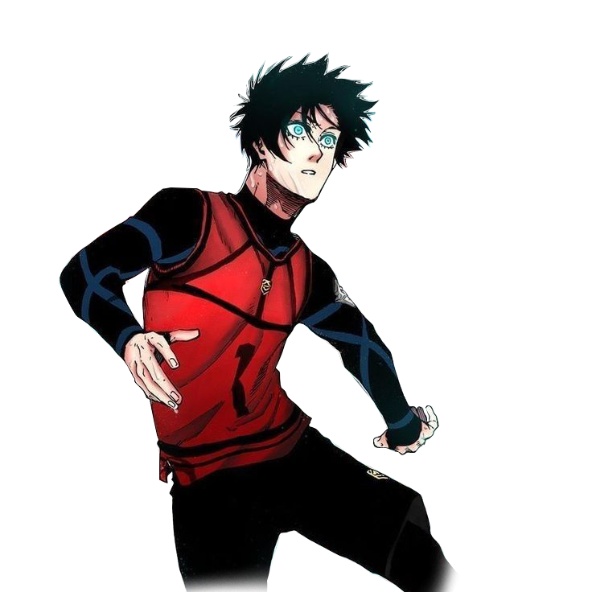

favorite
star_rate
RANK
2
ITOSHI RIN
(いとし凛)
Rin Itoshi é um candidato de Blue Lock, que atualmente joga como regular na França Paris X Gen no Liga Neo Egoist. Rin é o irmão mais novo de Sae Itoshi, que começou a jogar futebol com ele em tenra idade. Ele jogou como atacante em todos os times em que esteve e sempre foi considerado um dos melhores jogadores. Ele é considerado o melhor jogador de Blue Lock até que ele seja oficialmente confirmado por Jinpachi Ego no início do Terceira seleção.